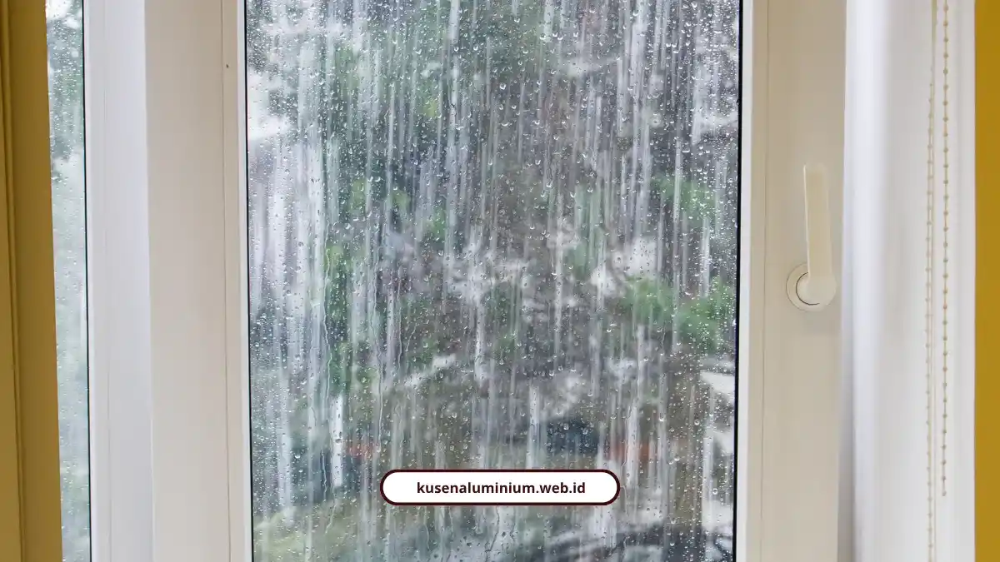
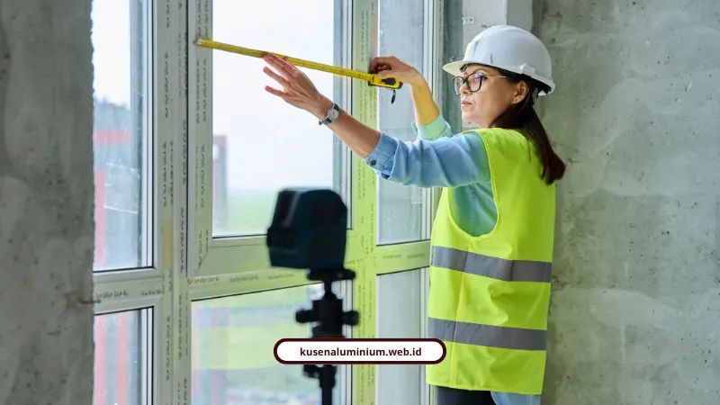

Kusen Tahan Cuaca Hujan untuk Dataran Tinggi Malang

📌 Ringkasan Inti
Ringkasan teknis standar kontrol kualitas kusen aluminium tahan cuaca hujan deras dan lembap di kawasan dataran tinggi Kabupaten Malang dan Kota Batu:
- Lima pilar ketahanan cuaca: profil lurus, finishing seragam, sambungan miter 45° rapat, karet seal EPDM, dan aksesoris stainless 304.
- Aluminium anti karat dan tidak lapuk, dilindungi powder coating utuh untuk menahan kelembapan tinggi kawasan pegunungan.
- Pemeriksaan 4 sisi sebelum pemotongan: fisik, kelurusan profil, keutuhan finishing, dan kelengkapan hardware.
- Toleransi presisi ketat: pengukuran 3 titik lebar & 3 titik tinggi demi mencegah kebocoran akibat selisih 2–3 mm.
- Standar packing berlapis dengan corner guard foam dan pengikat nilon untuk menjaga profil mulus bebas goresan hingga lokasi.
Kusen tahan cuaca hujan lahir dari kontrol kualitas: profil lurus, finishing rata, toleransi ukuran, karet EPDM. Melayani Kabupaten Malang, setiap kusen dicek sebelum kirim.
Daftar cek profil, dampak selisih 2-3 mm, dan cara mengemas kusen kami buka apa adanya.
Apa yang membuat kusen tahan cuaca hujan?
Kusen tahan cuaca hujan membutuhkan lima hal: profil lurus, finishing seragam, sambungan miter 45° rapat, karet weather-seal EPDM, dan aksesoris stainless steel 304 anti karat.
- Profil lurus: perakitan presisi dan pintu tidak macet.
- Finishing seragam: powder coating atau anodize yang tidak belang dan tidak mengelupas.
- Miter 45° rapat: sudut tanpa celah untuk air.
- Karet EPDM: menahan rembesan air hujan deras dan meredam kebisingan.
- Stainless steel 304: engsel stang casement, rambuncis, dan rel sliding tidak berkarat.
Selisih beberapa milimeter berpengaruh langsung pada kekedapan udara dan air. Karena itu, kontrol mutu dimulai jauh sebelum kusen sampai ke rumah Anda.
Kenapa kusen dataran tinggi butuh perlakuan khusus?
Kawasan dataran tinggi seperti Kota Batu bercuaca sejuk, lembap, dan berhujan tinggi. Kusen di sana harus tahan air, tidak lapuk, dan tidak dimakan rayap.
Aluminium punya ketahanan korosi yang baik, sehingga aman untuk kebutuhan anti karat air hujan. Kekurangannya, aluminium adalah konduktor termal tinggi, jadi lapisan finishing yang utuh sangat krusial agar insulasi dan estetika tidak menurun.
Melayani Kabupaten Malang dan Kota Batu, kami memakai standar mutu yang sama untuk kusen anti bocor dan presisi di semua wilayah.

Apa saja yang dicek sebelum profil dipotong?
Sebelum pemotongan, profil dicek dari empat sisi: kondisi fisik, kelurusan, finishing, dan kelengkapan hardware.
- Fisik: tidak ada penyok, retak, deformasi, atau goresan dalam.
- Kelurusan: tidak melengkung, tidak terpuntir, sisi rata.
- Finishing: seragam, tidak berbuih, tidak baret, tidak mudah mengelupas.
- Hardware: handle, engsel, lockcase, cylinder, rel sliding, roller, friction stay, karet seal, sekrup, dan anchor sesuai tipe dan jumlah.
Profil yang tidak lurus menyulitkan perakitan dan membuat pintu atau jendela tidak presisi saat dipasang.
Paket Kusen Tahan Cuaca Hujan Dataran Tinggi Malang
Solusi kusen aluminium kedap air hujan untuk rumah, villa, dan ruko di Malang & Batu: profil berkualitas, karet EPDM heavy-duty, hardware stainless steel 304 anti karat, gratis survei lokasi, dan garansi tertulis.
Seberapa besar pengaruh selisih 2-3 mm?
Selisih 2-3 mm langsung memengaruhi keselarasan, fungsi engsel dan kunci, kekedapan udara dan air, serta tampilan fasad.
- Kusen terlalu besar: sangat sulit dimasukkan ke bukaan dinding.
- Kusen terlalu kecil: celah longgar, sehingga sealant dan finishing dinding butuh kerja ekstra.
Karena itu bukaan tidak boleh diukur dari satu titik. Ukur 3 titik lebar (atas, tengah, bawah) dan 3 titik tinggi (kiri, tengah, kanan), lalu periksa diagonal, level, dan plumb.
Bagaimana kusen dijaga tetap mulus sampai lokasi?
Kusen dibungkus plastic wrap anti-lembab, dilapisi karton pelindung, diberi corner guard foam, dan diikat strapping nilon agar finishing tidak tergores.
- Tata material secara horizontal, jangan disandarkan miring supaya tidak bengkok
- Angkat dengan 2 sampai 4 orang tenaga angkut atau forklift dengan attachment khusus
- Jangan geser atau tarik tumpukan, karena itu penyebab utama goresan mikro
- Profil panjang 6-12 meter butuh penyangga "A" atau bogie, tali nilon tiap 2-3 meter, dan truk flatbed atau tronton
"Kontrol kualitas tidak berhenti di meja fabrikasi. Pengikat nilon, corner guard foam, dan pemuatan horizontal tanpa goresan menjaga presisi workshop sampai lokasi proyek."
Apa kata regulator dan praktisi soal presisi?
Standar nasional mengaitkan presisi kusen dengan koordinasi modular antara bukaan dinding dan dimensi kusen. Acuannya adalah SNI 03-1979-1990 tentang spesifikasi ukuran kusen, daun pintu, dan daun jendela.
Ir. Suryatin Sastromijoyo (mantan Kepala Badan Litbang P.U.) dan Ir. Soeratmo Notodipoero (Ditjen Cipta Karya) menekankan bahwa batas koordinasi modular menjadi kunci agar elemen bangunan terpasang presisi tanpa mengorbankan struktur.
Acuan tebal daun pintu adalah 33, 35, atau 40 mm, dan daun jendela 30, 35, atau 40 mm.
Kusen tahan cuaca hujan tidak lahir dari satu komponen. Profil lurus, finishing utuh, toleransi ukuran, karet EPDM, dan aksesoris stainless 304 harus bekerja bersama.
Jujur saja, aluminium mudah tergores dan kerusakannya sering permanen. Karena itu pengecekan dan packing kami perlakukan seketat fabrikasi.
Lihat hasil pemasangan di Galeri, hitung kebutuhan lewat Kalkulator Estimasi Biaya, lalu pesan kusen dataran tinggi melayani Kabupaten Malang lewat WhatsApp.
FAQ Seputar Kusen Tahan Cuaca Hujan
Kusen aluminium dengan sambungan miter 45° rapat, karet weather-seal EPDM, dan aksesoris stainless steel 304 tahan hujan deras. Kusen ini juga tidak lapuk dan tidak dimakan rayap.
Selisih 2-3 mm memengaruhi keselarasan, fungsi engsel dan kunci, kekedapan udara dan air, serta estetika fasad. Kusen terlalu besar sulit masuk, sedangkan yang terlalu kecil meninggalkan celah longgar.
Aluminium memiliki ketahanan korosi yang baik. Aksesoris seperti engsel dan rel memakai stainless steel 304 anti karat, sehingga tahan air hujan.